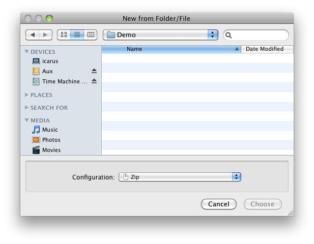

When you choose New from Folder/File… from the File menu, DropDMG brings up a window where you can select a source file or folder. Hold down the Command or Shift key to select multiple source items. For each source item, DropDMG will create a new disk image or archive, using the options from the selected configuration.
You can also choose a volume (e.g. a hard drive or optical disk) as the source for creating a disk image. In this case, DropDMG will create a special device image that is an exact copy of the source volume and its filesystem.
A shortcut for New from Folder/File… is to drag the source folder or file onto the DropDMG window or DropDMG’s Dock icon.
